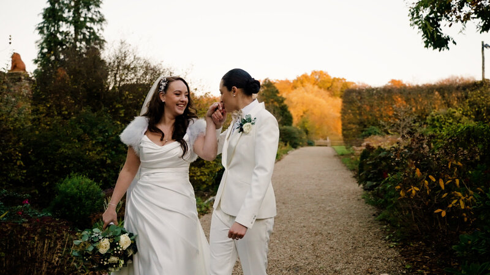

In recent years, the trend for smaller, more intimate weddings has grown significantly. Often called "micro-weddings," these celebrations might have a shorter guest list, but they certainly don't lack in heart. As videographers, we find that smaller weddings often allow for a deeper level of storytelling.
Meaningful Connections
With fewer guests, there's more time to spend with each person who matters most to you. This intimacy translates beautifully onto film. We can capture those heartfelt conversations, the shared laughter, and the quiet moments of connection that sometimes get lost in the noise of a larger event.

Attention to Detail
When you're planning for a smaller group, you can often focus more on the little details that make your day unique. From personalized favors to bespoke menus, these touches add a rich layer of character to your wedding film. We love zooming in on the small things that represent your personality as a couple.
Unique Venues
A smaller guest list opens up a whole world of unique venue possibilities. Think cozy restaurants, art galleries, private homes, or even a clearing in the woods. These non-traditional spaces often provide incredibly cinematic backdrops that you wouldn't find at a larger venue.
A More Relaxed Pace
Smaller weddings often have a more relaxed, unhurried pace. This allows you—and your videography team—to breathe and truly enjoy the day. Without the pressure of a massive schedule, we can capture those spontaneous, candid moments that feel most authentic.
It's All About You
At the end of the day, a small wedding is a beautiful reminder of what matters most: your love for each other. It's a day built specifically around your relationship, and that's exactly what we aim to capture in our films.